Inicio › Conexión remota
Cómo conectarme a tu equipo
Para resolver tu problema a distancia uso AnyDesk, un programa gratuito y seguro. Son cinco minutos de preparación y no hace falta que sepas nada de computación. Seguí los pasos según tu equipo.
Antes de empezar
- El equipo tiene que encender y poder iniciar el sistema.
- Necesitás conexión a internet estable.
- Coordiná conmigo por WhatsApp antes de instalar nada: la conexión se hace en el momento, los dos presentes.
-
1
Descargá el programa
Tocá el botón de acá abajo: la descarga arranca sola desde el sitio oficial de AnyDesk. Pesa poco y tarda unos segundos.
-
2
Abrí el archivo descargado
Buscá AnyDesk.exe en la carpeta de Descargas y hacé doble clic. No hace falta instalar nada: el programa se abre directamente. Si Windows te pregunta si permitís la ejecución, aceptá.
-
3
Pasame el código que aparece en pantalla
Arriba a la izquierda, bajo el título Este puesto de trabajo, vas a ver un número de nueve dígitos. Mandámelo por WhatsApp.
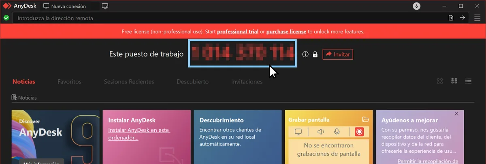
Ese es el número que necesito. En la imagen está tapado a propósito. -
4
Aceptá mi solicitud
Cuando yo ingrese ese número te va a aparecer una ventana pidiendo permiso. Tocá Aceptar y ahí empieza la conexión. Vas a ver todo lo que hago en tu pantalla, en vivo.
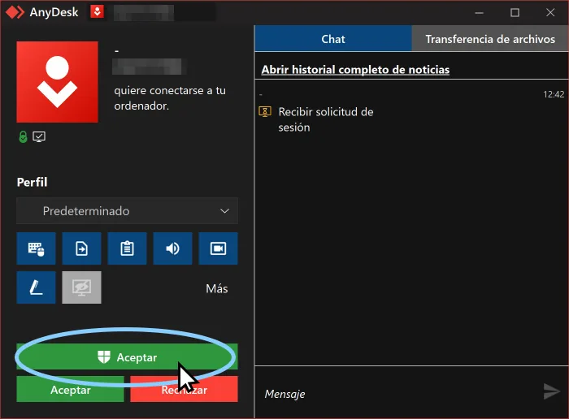
La ventana de solicitud. El botón verde Aceptar es el único que hace falta tocar.
-
1
Descargá el programa
Tocá el botón de acá abajo: se descarga un archivo con extensión .dmg desde el sitio oficial de AnyDesk.
-
2
Instalá AnyDesk
Abrí el archivo .dmg descargado y arrastrá el ícono de AnyDesk hasta la carpeta Aplicaciones, como con cualquier programa de Mac.
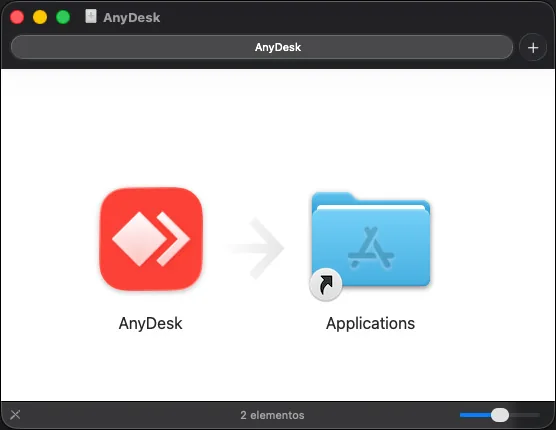
Arrastrá el ícono de AnyDesk sobre la carpeta Aplicaciones. -
3
Abrilo desde Aplicaciones
Entrá a la carpeta Aplicaciones y abrí AnyDesk. La primera vez, macOS puede avisarte que es una app descargada de internet: confirmá que querés abrirla.
-
4
Habilitá los permisos
Este paso es el que más se traba, y sin él yo puedo ver tu pantalla pero no puedo usar el mouse ni el teclado. Elegí abajo tu versión de macOS y te muestro los pasos exactos.
Si no sabés qué versión tenés, abrí el menú de la manzana, arriba a la izquierda, y entrá en Acerca de esta Mac.
Tahoe, Sequoia, Sonoma y Ventura
- Abrí Configuración del Sistema y entrá a Privacidad y seguridad. Ahí adentro vas a usar dos secciones: Accesibilidad y Grabación de audio del sistema y pantalla.
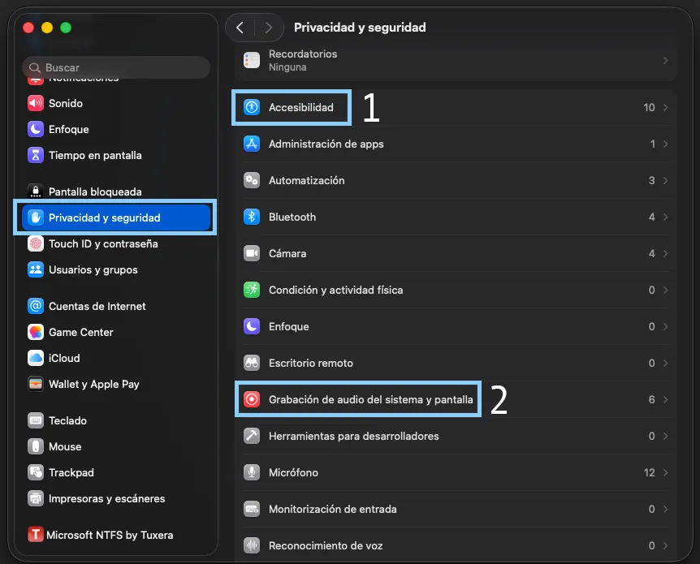
Las dos secciones que hay que tocar, en ese orden. - Entrá a Accesibilidad y activá el interruptor de AnyDesk.
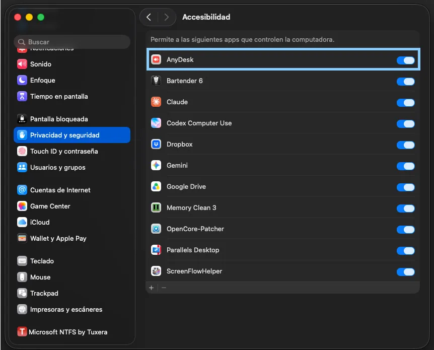
AnyDesk activado en Accesibilidad. - Volvé atrás, entrá a Grabación de audio del sistema y pantalla y activá AnyDesk también ahí. En las versiones más viejas esta sección se llama Grabación de pantalla.
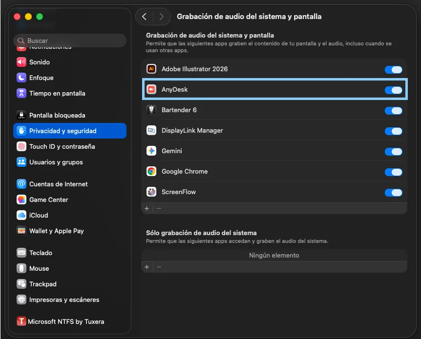
AnyDesk activado en Grabación de audio del sistema y pantalla.
Monterey, Big Sur y Catalina
- Abrí Preferencias del Sistema y entrá a Seguridad y privacidad.
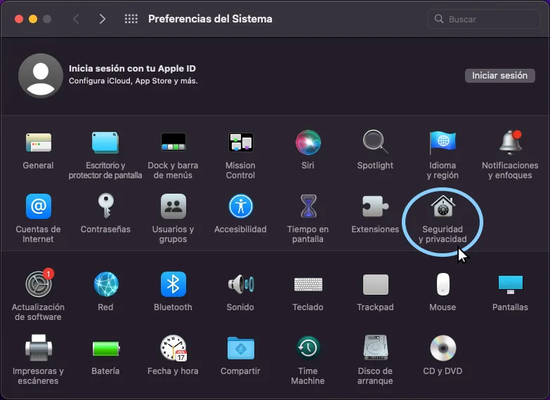
Preferencias del Sistema, ícono Seguridad y privacidad. - Andá a la pestaña Privacidad, hacé clic en el candado de abajo a la izquierda, ingresá tu contraseña y elegí Accesibilidad en la lista de la izquierda.
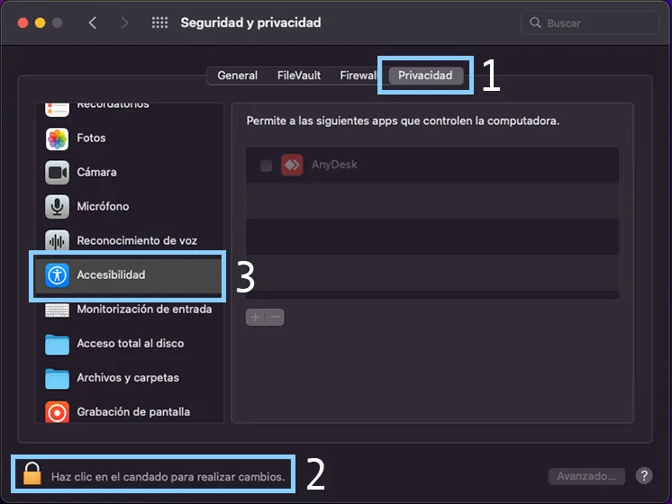
Sin destrabar el candado no se puede tildar nada. - Tildá la casilla de AnyDesk.
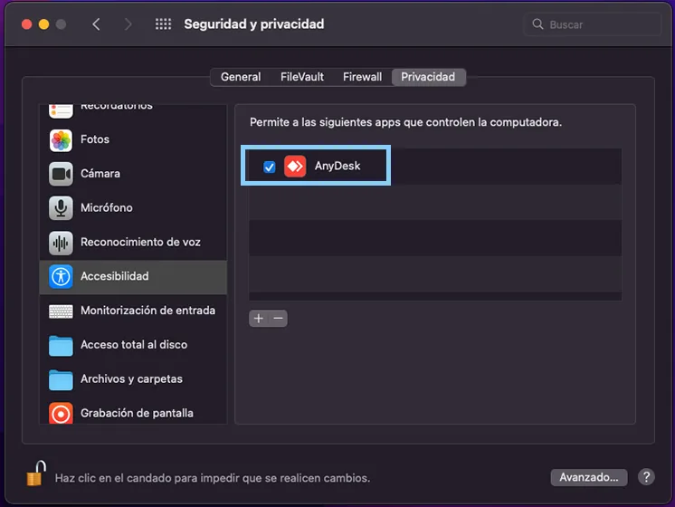
AnyDesk tildado en Accesibilidad. - En la misma lista, bajá hasta Grabación de pantalla. Si AnyDesk no aparece, tocá el botón + para agregarlo.
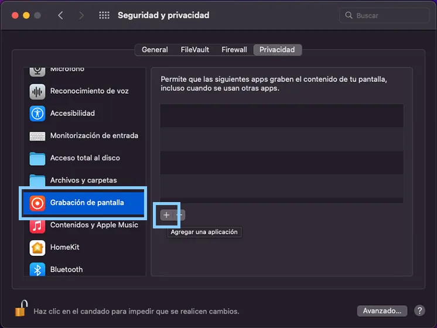
El botón + sirve para agregar la aplicación a mano. - Elegí AnyDesk dentro de la carpeta Aplicaciones y tocá Abrir.
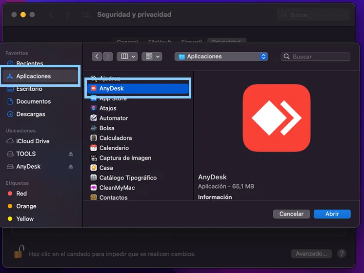
AnyDesk está en la carpeta Aplicaciones. - Tildá AnyDesk también acá. Si te pide cerrar y volver a abrir el programa, aceptá.
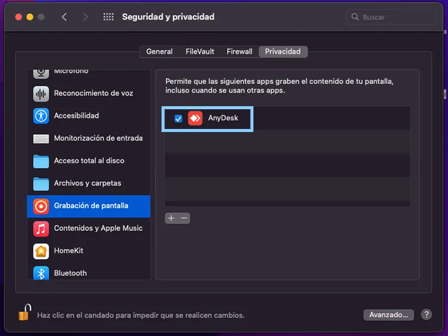
Listo: AnyDesk tildado en las dos secciones.
Mojave y anteriores
- Abrí Preferencias del Sistema y entrá a Seguridad y privacidad.
Preferencias del Sistema, ícono Seguridad y privacidad. - Andá a la pestaña Privacidad, hacé clic en el candado de abajo a la izquierda, ingresá tu contraseña y elegí Accesibilidad en la lista de la izquierda.
Sin destrabar el candado no se puede tildar nada. - Tildá la casilla de AnyDesk.
AnyDesk tildado en Accesibilidad.
En estas versiones no existe el permiso de Grabación de pantalla: alcanza con Accesibilidad. Las pantallas pueden verse algo distintas a las de las imágenes. Si AnyDesk no te llega a instalar, escribime y lo resolvemos juntos.
- Abrí Configuración del Sistema y entrá a Privacidad y seguridad. Ahí adentro vas a usar dos secciones: Accesibilidad y Grabación de audio del sistema y pantalla.
-
5
Pasame el código que aparece en pantalla
Bajo el título Este puesto de trabajo vas a ver un número de nueve dígitos. Mandámelo por WhatsApp.
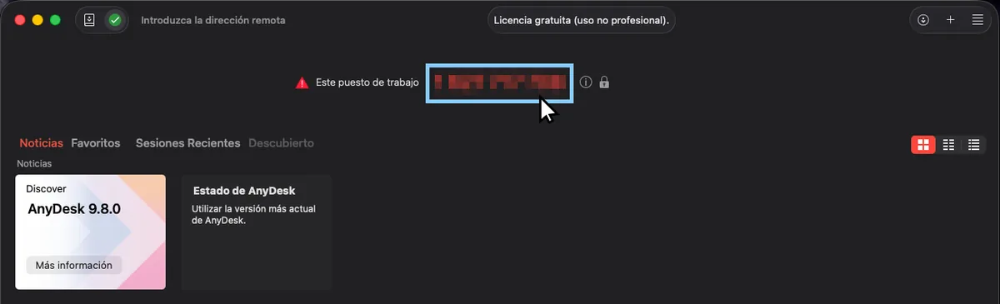
Ese es el número que necesito. En la imagen está tapado a propósito. -
6
Aceptá mi solicitud
Cuando yo ingrese ese número te va a aparecer una ventana pidiendo permiso. Tocá Aceptar y empieza la conexión.
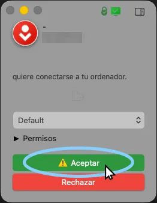
La ventana de solicitud, con el botón verde Aceptar.
Para tu tranquilidad y seguridad
Nunca instales AnyDesk ni ningún programa de acceso remoto porque te llamó alguien por teléfono diciendo que es del banco, de una empresa de internet o de soporte técnico. Es la estafa más común del rubro. Si no coordinaste vos la conexión, no aceptes.
Lo que dicen de la asistencia remota
Muy atento, resolutivo y rápido. Me fue ayudando remotamente y me mandaba tutoriales cuando no sabía cómo hacer algunas cosas. Incluso me escribió al otro día para ver si la compu seguía bien. ¡Recomiendo!
Ailin GlusmanMuy pronta respuesta. Además, por ser remoto es muy útil, ya que no tenés que llevar tu compu y después ir a retirarla. Verificás en línea la reparación y el diálogo facilita resolver de inmediato si aparecen otros problemas.
Eleonora VivianiUn genio, me ayudó a solucionar muchas cosas y de manera remota. Muy amable, súper recomendable.
María Jimena Matías100% recomendable. Siempre que tengo algún problemita con mi compu, me ayuda a distancia de manera muy práctica y resolutiva.
Rocío FontanaMe resolvieron un problema al que no le encontraba la vuelta. Lo solucionaron en el día y de manera remota. Recomiendo.
Pablo BenvenuttiExcelente servicio, tenía un problema con un software y fue resuelto rápidamente a distancia. Muy recomendable.
Maru D.Excelente servicio, trabaja de forma remota y si le llevás el equipo lo hace rápido y muy eficiente. Muy buen trato.
Agustín Chumbel¡Gran trabajo y todo remoto!
Juan Pablo Tiphaine¿Listo para conectarnos?
Pasame el código de nueve dígitos por WhatsApp y me conecto en el momento. Lunes a viernes de 10 a 19 hs.
Enviar mi código